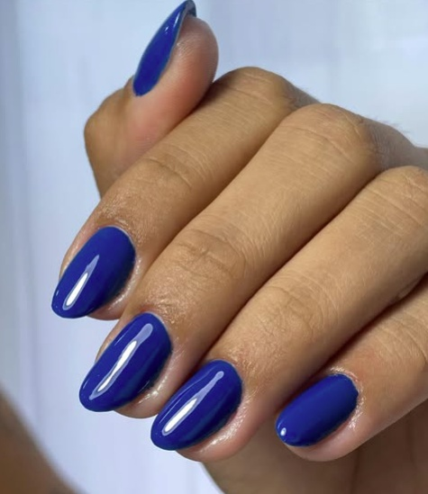

Fibra de vidro
Alongamento com foco em estrutura, simetria e resultado visual natural.
Fibra de vidro, blindagem e cuidados de manutenção com foco em acabamento limpo, durabilidade e uma experiência de atendimento cuidadosa.
Jaque atende no ateliê compartilhado J|D Studio Beauty. A localização completa é informada no processo de agendamento.
Alongamento com foco em estrutura, simetria e resultado visual natural.
Correção de crescimento, equilíbrio da estrutura e renovação do acabamento.
Proteção e nivelamento da unha natural com acabamento durável.
Reforço e acabamento para unhas naturais, preservando proporção e leveza visual.
Consulte a agenda para disponibilidade e informações atualizadas de cada procedimento.
Uma pequena seleção do acervo já existente. O feed do Instagram continua sendo o arquivo vivo de resultados e inspirações.



Consulte horários pelo Trinks. Se precisar de ajuda antes de marcar, fale com a Jaque pelo WhatsApp.
No J|D Studio Beauty. A localização completa é confirmada no agendamento.
Use o botão de agendamento pelo Trinks para consultar os horários.
Sim. O WhatsApp continua disponível para dúvidas e ajuda antes de marcar.
Consulte as informações atualizadas no fluxo de agendamento; se algum procedimento não estiver claro, confirme pelo WhatsApp.